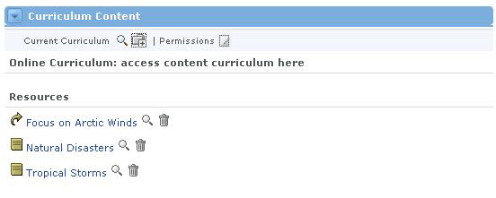
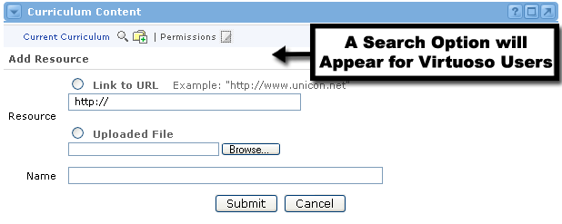
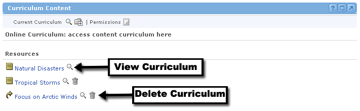

Curriculum Content Channel
Looking for more help options? Click Here
The Curriculum Content Channel :Displaying Curriculum
:Displaying Curriculum
Adding New Curriculum
Viewing Curriculum
The Curriculum Content Channel displays links to any curriculum associated with the current offering. Curriculum can be viewed by clicking on the desired link from the list. If the user possesses the proper permissions, curriculum may also be added and deleted from within the curriculum channel.

|
 - shows a listing of all curricula content associated with this offering. This is the default view.
- shows a listing of all curricula content associated with this offering. This is the default view. - displays an interface for the adding of curricula content to the current offering.
- displays an interface for the adding of curricula content to the current offering.
.gif) - launches a new browser window that displays the curriculum content selected.
- launches a new browser window that displays the curriculum content selected.To add a new set of curriculum content, all you have to do is click on the Add icon at the top of the curriculum channel window.
Three types of content can be added:
- Online Curriculum - This option is for Virtuoso customers only. This curriculum has already been added to the Virtuoso Delivery Engine, so it can be referenced in other offerings. If you do not have Virtuoso in your configuration, this option will not appear as in the screenshot below.
- Link to URL - This will launch a new browser window with the URL you specify. This should point to a set of curriculum content that is already hosted online somewhere.
- Upload File - You will need to specify a specific file on your local computer or network so it can be uploaded to the repository for others to download.
Adding Online Curriculum In order to add curriculum from the Virtuoso repository to your offering, follow these steps:
|

Linking to a URL for Curriculum
If you have already created your curriculum and it is hosted on an external website, or if you are choosing to leverage content on a website created by another source, you should use this option to add it to your offering.
- Go to the Curriculum Content channel and click the Add icon.
- Select the Link to URL radio button.
- Enter the complete URL in the provided field. Make sure you include the "http://" before your URL.
- Give your curriculum a name by typing it in the Name field.
- Click the Submit button.
- The curriculum will now be added to your offering.
Uploading a Curriculum File Sometimes curriculum exists, but not in the form of web pages. In this case, you can upload your curriculum file to the portal, where users within this offering can access it.
|
|
|
Your system administrator has set the maximum file sizes for document imports. Please contact that individual for details on this limitation. |
Viewing Curriculum is easy. All you need to do is locate the Curriculum Content channel. Each row represents a compiled set of content that has been previously added to this offering. Each curriculum's type can be identified by the icon to the left of it:
- Links to curriculum that is already hosted online.
 - Links to curriculum that must be downloaded in order to view.
- Links to curriculum that must be downloaded in order to view.
To view any curriculum, click the name of that curriculum, or, simply click the magnifying glass icon to the right of the curriculum name. This curriculum either appears in a new browser window, or if it is a file, you will be prompted to download it to your local computer.

Removing Curriculum
If you decide that you would like to remove any curriculum from your offering, this can be done quite quickly. First, locate the Curriculum icon next to the name of the curriculum. Then click the Delete icon next to the name of the curriculum. Prior to deleting the content, the system will ask you if you really want to remove that curriculum. Select the Yes radio button and click Submit.
You will now see the updated Curriculum Content channel without the curriculum you just removed.